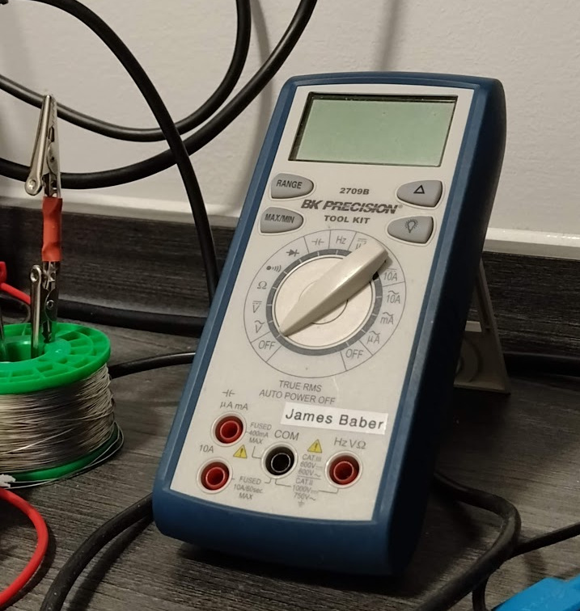
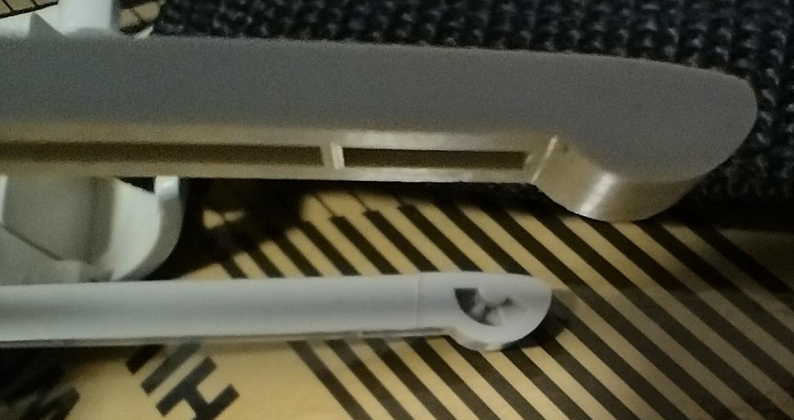
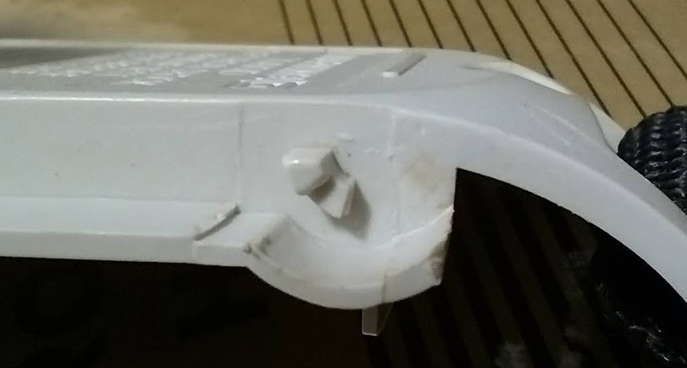
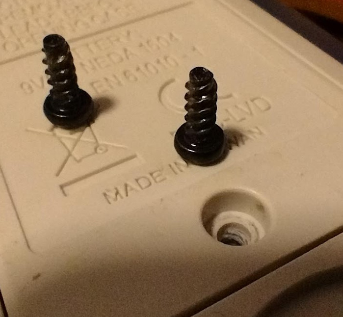
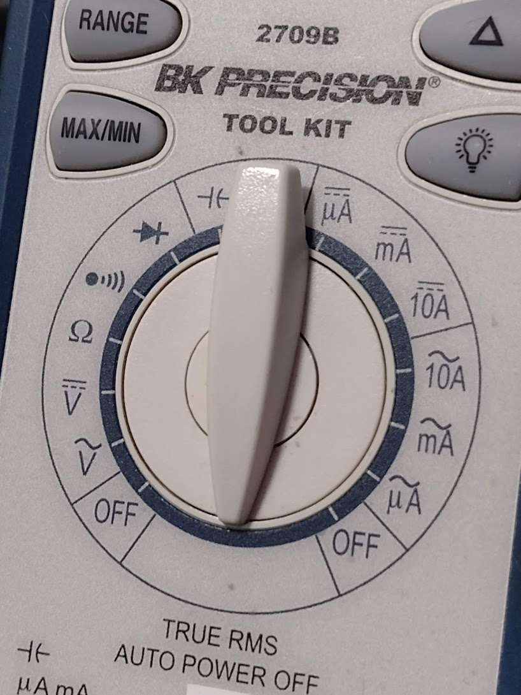

My experience with the BK Precision 2709B
Accurate but fragile.

Build Quality
The 2709B definitely isn't a rugged meter for site work.
It has a thin blue rubberised overmoulding which makes it pleasant to hold, but the stand leaves a lot to be desired.
I first had issues with it within the first month of ownership.
The small plastic lugs on the battery door that the stand pivots on are very poor.
There is no hard end stop for the stand so it's easy to open it too far and damage the lugs.
I managed to sheer off one of the lugs on my unit but BK Precision's support department sent me a replacement free of charge!
Upon fitting this new battery cover and stand it was instantly apparent that the stand was simply badly designed.
It doesn't feel solid and doesn't click closed properly.


The battery and fuses are accessible once you've removed the screws.
The screws thread directly into the plastic and there are no metal inserts.
This is another very low cost improvement that would increase the value of this meter greatly.
When the screw threads are inevitably stripped, a small amount of super glue spread around the inside of the hole (and left to dry) offers an adequate surface for the screws to thread back into.

So that's all the complaints I have for the build quality? No, sadly not.
The rotary range selector switch end stops are just as fragile as the stand mechanism.
On my unit the limit has been defeated allowing the range switch to go beyond the off position.
It's not like this is a super-off position - it's just broken! BK, you can do better than this.

I've dropped their support department a (second) email and will update this page when they let me know how much a replacement part will cost me!
Fuses
The 10A range fuse (F2) is rated for 600 V but as it's in the 6.35 mm x 25.4 mm form factor, you can use a BS1362 (UK type G plug) fuse in a pinch!
Just make sure to replace it with the correct voltage rating as soon as possible.
See the
user manual for fuse details.
Probes and Accessories
Despite being PVC rather than silicone, the test leads are very flexible.
The insulated tip shrouds can be thrown away immediately. Not because they aren't useful but instead because you'll loose them at some point anyway.
Conclusions
Since I purchased mine from Metrix Electronics in 2016, RS have started to stock it.
Seeing as it isn't being discontinued soon, it's a shame that BK Precision haven't released a revised edition of the 2709B with some essential durability improvements.
Sources
BK2709b Manual
BK2709b Datasheet
Extra reading
Kerry Wong's Review
Dave Jones' Review on the EEVBlog
Purchase the BK2709b from Tequipment.net